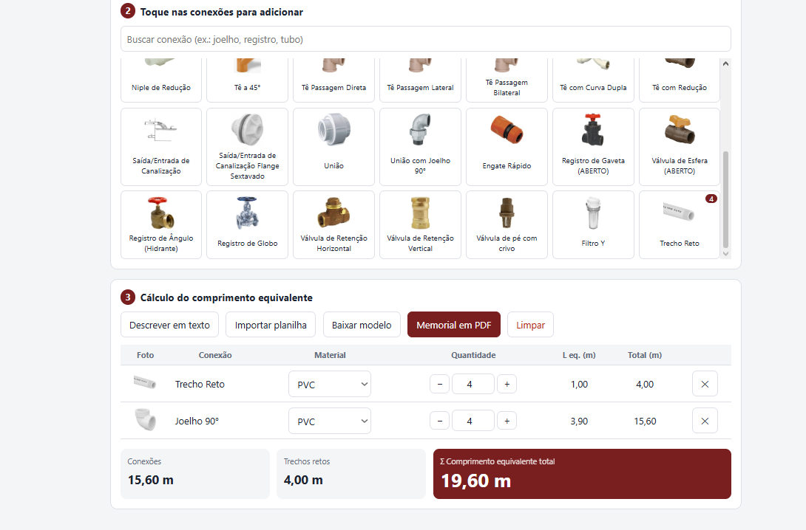
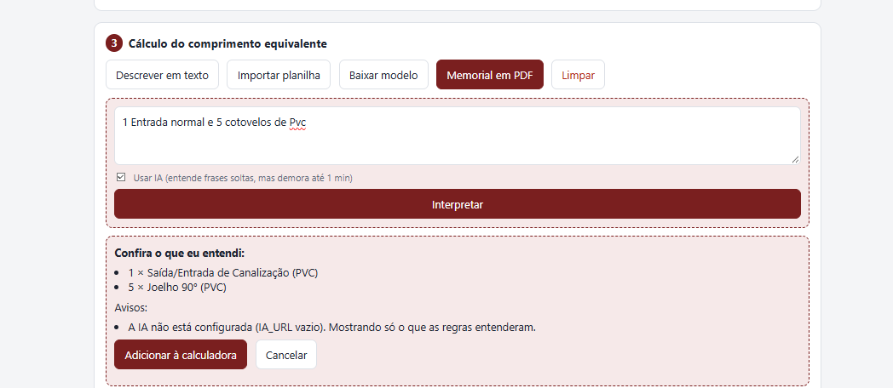

Cada conexão de uma instalação hidráulica (joelhos, tês, registros, válvulas) provoca uma perda de carga localizada. O comprimento equivalente é o comprimento de tubo reto, de mesmo diâmetro, que causaria a mesma perda. O desafio foi desenvolver um software aberto que some esses comprimentos a partir da tabela da disciplina (planilha 1 Perda de Carga Localizada.xlsx), para auxiliar estudantes e profissionais em Fenômenos de Transporte, Hidráulica e Instalações.
Ltotal = Σ (quantidadei × Leq unitário, i)
2. Objetivos
Automatizar o cálculo do comprimento equivalente total com precisão, sem erros de arredondamento.
Guardar a tabela do professor em um banco de dados interno, com versões que podem ser trocadas e revertidas.
Oferecer uma interface simples: escolher o diâmetro, tocar nas conexões e ver o total.
Gerar um memorial de cálculo em PDF (requisito bônus).
Aplicar boas práticas de engenharia de software: Clean Code, testes automatizados, integração contínua e versionamento com Git e GitHub.
3. Requisitos e como foram atendidos
Requisito do enunciado
Como foi atendido
Entrada: diâmetro em mm ou polegadas
Seletor com os 15 diâmetros da planilha (1/4" a 14") e conversão para mm. O material (PVC ou Metal) é escolhido por item.
Entrada: componentes e quantidades
Cartões com a foto de cada uma das 35 conexões (fotos extraídas da própria planilha), entrada por planilha modelo (.xlsx), por texto livre e, opcionalmente, por IA local. Toda entrada indireta passa por uma tela de confirmação.
Back-end com banco de dados interno alimentado pela planilha
SQLite com versões da tabela: importação, prévia das mudanças, ativação, reversão e exportação para .xlsx.
Saída: comprimento equivalente total
Total em metros com detalhamento por item (quantidade × valor unitário = subtotal).
Bônus: memorial de cálculo em PDF
PDF com dados do projeto, tabela de itens, total, lista de compras e versão da tabela usada.
Código aberto
Repositório público no GitHub com licença MIT.
Clean Code: separar física, banco e interface
Camadas independentes (seção 5). A física não conhece web nem banco.
Pedido do professor após a apresentação
Caixa para somar trechos retos (v1.2.0) e gestão da tabela sem senha (v1.1.0).
4. Ferramentas e tecnologias
Ferramenta
Versão
Para que foi usada
Python
3.12
Linguagem do back-end, dos testes e do executável.
FastAPI + Pydantic
0.162.0
API REST: cálculo, memorial, leitura de itens e gestão da tabela. O Pydantic valida as entradas.
Uvicorn
0.54.0
Servidor web que roda a API.
SQLite
embutido no Python
Banco interno: versões, diâmetros, conexões, valores e fotos.
openpyxl
3.1.5
Ler a planilha do professor (inclusive as imagens), ler a planilha de itens e exportar a tabela.
Pillow
12.3.0
Tratar as fotos das conexões.
RapidFuzz
3.14.6
Reconhecer nomes de conexões escritos de formas diferentes ("joelho 90", "cotovelo de 90 graus").
fpdf2
2.9.0
Gerar o memorial de cálculo em PDF.
HTML, CSS e JavaScript
sem framework
Interface leve, que funciona no celular.
Ollama (qwen2.5:1.5b)
modelo local
IA opcional, rodando no homelab, que só transforma frases em itens. A IA nunca calcula.
pytest
9.1.1
70 testes automatizados.
Ruff
0.17.3
Linter e padronização do código.
Git + GitHub
-
Versionamento, issues, pull requests, releases e proteção da branch main.
GitHub Actions
-
CI (testes e lint a cada PR) e geração do executável Windows.
GitHub CLI (gh)
-
Criar issues, PRs e releases pelo terminal.
Discloud
-
Hospedagem do site em https://calc-hidraulica.discloud.dev.
Homelab Ubuntu Server + Tailscale Funnel
26.04
Servidor próprio que roda a IA, exposto com HTTPS e protegido por token.
PyInstaller
6.22.3
Empacotar a calculadora em um único .exe para Windows.
VS Code e WSL/Linux
-
Ambiente de desenvolvimento.
5. Arquitetura e lógica
Pasta
Responsabilidade
app/dominio
Física pura: tabela, diâmetros, regras e cálculo. Não conhece web nem banco.
app/dados
Importar a planilha do professor e guardar as versões no SQLite.
app/entrada
Ler itens de planilha, de texto e da IA.
app/relatorio
Memorial de cálculo em PDF.
app/static
Interface (HTML, CSS, JavaScript).
app/main.py
API FastAPI que liga as camadas.
servico_ia
Serviço com token na frente do Ollama, rodando no homelab.
desktop.py
Ponto de entrada da versão Windows: sobe o servidor local e abre o navegador.
Decisões de lógica
Precisão: todo cálculo usa Decimal, então 0,1 + 0,2 dá exatamente 0,3.
Validação no domínio: quantidade maior que zero, peças inteiras, limite de peças e trechos retos positivos. A API apenas repassa os erros.
Itens repetidos são agrupados: dois "joelho 90° PVC" viram uma linha com a soma das quantidades.
Trechos retos: o usuário digita cada trecho (0,3 + 1,5 + 3 ...) e a calculadora soma. O total aparece no memorial com a lista de trechos.
Tabela versionada: importar uma planilha nova cria uma versão. Antes de ativar, a prévia mostra o que mudou. Dá para voltar a qualquer versão.
IA só interpreta: a IA devolve JSON validado por esquema. Se ela estiver fora do ar, o leitor de texto por regras assume. O usuário sempre confirma antes de calcular.
Interface sem condição de corrida: cada pedido recebe um número (pedidoAtual) e respostas antigas são descartadas.
Segredos só no .env: tokens nunca entram no código nem no Git.
6. Versionamento
O projeto foi versionado com Git e hospedado no GitHub. Cada funcionalidade seguiu o mesmo fluxo, para que o histórico conte a história do trabalho:
issue → branch → commits → pull request → CI verde → squash merge na main → release
Regras adotadas
Issues: 14 issues, uma por etapa (configuração, importação, motor, banco, API, interface, deploy, entradas, IA, memorial, entrega e as melhorias pedidas pelo professor). Todas fechadas.
Branches com nome padronizado:feat/3-motor-de-calculo, fix/lacuna-app-js, chore/7-deploy-discloud, docs/11-entrega. O número liga a branch à issue.
Conventional Commits: o prefixo diz o tipo da mudança: feat (funcionalidade), fix (correção), test, docs, chore (configuração).
Pull requests com modelo: o que muda, como testar e "Closes #N", que fecha a issue no merge.
Squash merge: cada PR vira um único commit na main, com o número do PR. A main ficou com 23 commits limpos.
Branch main protegida: não aceita push direto, exige o CI verde e exige a branch atualizada. A regra vale também para o administrador (enforce_admins).
Versionamento semântico (SemVer): MAJOR.MINOR.PATCH. v1.0.0 marcou a entrega da P2. Funcionalidades novas sobem o MINOR e correções sobem o PATCH.
Integração contínua (GitHub Actions)
ci.yml (job "testes"): a cada PR roda ruff check e os 70 testes do pytest. O PR só pode entrar com tudo verde.
windows.yml: numa máquina Windows, gera o .exe com o PyInstaller, abre o executável, confere que o Exercício 5 dá 17,80 m e só então monta o zip. Em toda release o zip é anexado automaticamente.
O PR #16 ("teste: ci vermelho") foi aberto de propósito com um teste quebrado, para comprovar que a proteção bloqueia o merge. Ele foi fechado sem merge.
Onde conferir as provas do versionamento
Tudo o que está descrito nesta seção pode ser conferido publicamente no repositório:
Motor de cálculo: importação da planilha e cálculo com Decimal.
v0.2.0
03/11/2026
Calculadora no ar: banco, API, interface e deploy no Discloud.
v0.3.0
03/11/2026
Entrada por planilha e por texto.
v0.4.0
03/11/2026
IA local no homelab (apenas tag).
v0.5.0
03/11/2026
Memorial de cálculo em PDF.
v0.5.1
03/11/2026
Correção: total não aparecia na interface.
v1.0.0
03/11/2026
Entrega da P2: README, validação e capturas de tela.
v1.1.0
10/11/2026
Gerenciar a tabela sem senha de administrador.
v1.2.0
10/11/2026
Caixa para somar trechos retos (pedido do professor).
v1.3.0
15/11/2026
Versão Windows: executável que roda sem instalar.
Pull requests integrados
PR
Data
Título
Branch
#15
30/10
chore: configura repositório, CI e licença
chore/1-configura-repositorio
#17
30/10
docs: selo do CI no README
docs/selo-ci
#18
31/10
feat: importa a planilha de comprimentos equivalentes
feat/2-importa-planilha
#19
31/10
test: toda linha da planilha tem foto
test/fotos-da-planilha
#20
31/10
feat: motor de cálculo
feat/3-motor-de-calculo
#21
01/11
feat: salva versões da tabela em SQLite
feat/4-banco-versoes
#22
01/11
feat: API de cálculo e gestão da tabela
feat/5-api
#23
01/11
feat: saúde com versão ativa e valores por conexão
feat/saude-e-conexao
#24
01/11
feat: interface de calculadora
feat/6-interface
#25
01/11
chore: deploy no Discloud com subdomínio
chore/7-deploy-discloud
#26
03/11
feat: lê itens de planilha e de texto
feat/8-entrada-planilha-texto
#27
03/11
feat: interpreta texto com IA local no homelab
feat/9-ia-local
#28
03/11
chore: ignora configurações do VS Code
chore/ignora-vscode
#29
03/11
fix: total não aparecia por lacuna no app.js
fix/lacuna-app-js
#30
03/11
docs: README, relatório e entrega
docs/11-entrega
#31
03/11
renomeia captura de tela para confirmacao-ia.png
(editor web do GitHub)
#33
10/11
feat: gerenciar tabela sem senha
feat/32-tabela-sem-senha
#35
10/11
feat: caixa para somar trechos retos
feat/34-soma-trechos-retos
#37
15/11
feat: executável Windows para rodar sem instalar
feat/executavel-windows
Problemas de versionamento e o que aprendi
Problema
Solução
Commits feitos direto na main local
git switch -c nova-branch leva os commits para uma branch e git branch -f main origin/main devolve a main ao estado do GitHub.
Push recusado na main protegida
A proteção funcionou como esperado. As mudanças seguiram por branch e PR.
Tag de release criada no commit errado
A release e a tag foram apagadas com gh release delete --cleanup-tag e recriadas no commit da main.
PR "desatualizado com a main"
git rebase origin/main e git push --force-with-lease, que só força se ninguém mais mexeu na branch.
Commit do memorial feito direto na main (fe80780 e 54a43de)
Ficou registrado no histórico. A issue #10 foi fechada com a explicação, e a proteção passou a valer também para o administrador.
Erros de lint (F811, F821) e testes falhando
O CI barrou o merge até a correção. Foi a prova prática de por que o CI existe.
7. Deploy e distribuição
Site: Discloud (discloud.config, tipo site, porta 8080). O banco fica no .discloudignore, então um deploy novo não apaga as versões da tabela.
IA: serviço FastAPI no homelab (Ubuntu Server) na frente do Ollama, exposto com Tailscale Funnel (HTTPS) e protegido por token. Sem a IA, a calculadora continua funcionando com o leitor por regras.
Windows:CalculadoraHidraulica.exe gerado pelo PyInstaller no GitHub Actions. Roda sem instalar nada e sem internet. Os dados ficam em %LOCALAPPDATA%\CalculadoraComprimentoEquivalente. Essa versão também resolve redes com firewall que bloqueiam o site, como o Fortinet da faculdade.
8. Validação e resultados obtidos
Caso
Calculadora
Observação
Exercício 5 dos slides (3/4")
17,80 m
Igual ao gabarito: 1 saída de canalização, 5 joelhos 90° PVC, 2 registros de gaveta e 10,7 m de trechos retos. Conferido nos testes e no próprio executável Windows.
Exemplo do slide 46 (Metal 1")
23,08 m
O slide mostra 30,8 m porque usa uma tabela antiga (joelho 90° Metal 1" = 0,8 m; na planilha é 0,94 m) e o valor 8,2 m, que é o do registro de globo. Trocando gaveta por globo, a calculadora dá 31,08 m.
Conferência da planilha
7 avisos
Valores suspeitos (curva de transposição Metal F21/G21, luva de redução, niple de redução Metal) e 6 saltos maiores que 3× entre diâmetros vizinhos (ex.: união 5"→6"). Registrados em docs/validacao.md.
Testes automatizados
70 passando
Cálculo, importação, banco, API, entradas, sanidade da planilha e versão desktop.
Questão em aberto para o professor: a coluna em mm da planilha se refere ao diâmetro externo do PVC soldável ou ao DN? Os valores da tabela são indexados pela polegada; a escolha em mm aponta para a polegada correspondente.
9. Registro fotográfico

Figura 1 - Tela principal: diâmetro, cartões das conexões e total.

Figura 2 - Texto livre interpretado e tela de confirmação antes do cálculo.
Windows sem internet: extraia este zip e dê dois cliques em CalculadoraHidraulica.exe. Se o Windows avisar, clique em "Mais informações" e depois em "Executar assim mesmo".
Escolha o diâmetro (polegadas ou mm).
Toque nas conexões e ajuste as quantidades e o material, ou descreva em texto, ou importe a planilha modelo.
Some os trechos retos na caixa própria.
Veja o total e baixe o memorial em PDF.
11. Conclusão
O software atende a todos os requisitos do enunciado, inclusive o bônus do memorial em PDF, e incorporou as melhorias pedidas pelo professor depois da apresentação. Além do resultado de engenharia (o Exercício 5 confere com o gabarito), o trabalho exercitou o ciclo completo de desenvolvimento: planejamento em issues, código em camadas, testes automatizados, revisão por pull request, integração contínua, releases semânticas, deploy na nuvem, IA local em servidor próprio e distribuição como executável. O histórico do GitHub registra cada passo e pode ser auditado por qualquer pessoa em github.com/LucasSMFerreira/calc-comprimento-equivalente.